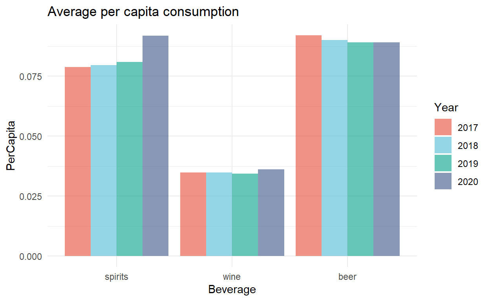
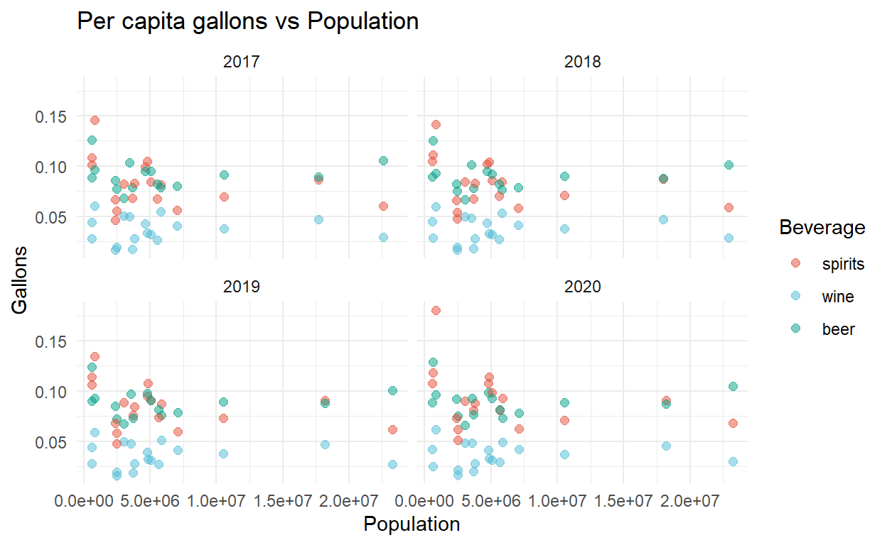

Does the alcohol consumption in the USA increased over the last four years? We will try to answer this question with a descriptive statistical analysisi of the consumption of alcohol of a sample of 19 states. The analysis is performed entirely in R.
Alcohol has historically, and continues to, hold an important role in social engagement and bonding for many. Social drinking or moderate alcohol consumption for many is pleasurable.
However, alcohol consumption – especially in excess – is linked to a number of negative outcomes: as a risk factor for diseases and health impacts; crime; road incidents; and for some, alcohol dependence. Globally alcohol consumption causes 2.8 million premature deaths per year.
PRecisely, constant and excessive alcohol use has been shown to cause many health complications and increase the risk of many diseases. For example, alcohol consumption increases the risk of various types of cancer, cardiovascular disease, and liver disease. The cost of such health complications from alcohol is substantial. As of 2017, it was estimated that the health care costs alone from the abuse of alcohol in the United States were around 27 billion dollars a year.
A common health complication from the abuse of alcohol is liver cirrhosis. Cirrhosis is scarring of the liver from repeated injury. It can cause other health complications such as high blood pressure, bleeding, and infection, and can result in early death if left untreated. In 2017, there were over 22,000 alcohol-related liver cirrhosis deaths in the U.S., almost double the number reported 15 years earlier.
The data contains the monthly alcohol consumption, spanning from 2017 to the first nine months of 2020, of a sample of 19 USA States. The variables considered are:
Year: the reference year
Month: the reference month
FIPS: the name of the state where data were collected
Beverage: the type of alcoholic beverage (beer, wine or spirits)
Gallons: the total gallons of alcohol consumed from the population ranging from 14 to 65 years old
Population: the total drinking population in the state at a given date
PerCapita: the per capita alcohol consumption
The figure 1 shows the mension consumption of alcohol in gallons. From the figure it is clear that the series is characterized by an evident seasonal component with increases in the months of June and December, both characterized by the presence of holidays and decreases during January, February and March. In June we have Father’s Day and Independence Day while in December Christmas and New Year’s Day. The seasonal trend is particularly evident for beer and wine whereas it is less pronounced for liquors.
Figure 1: Time trend of the total aounth of monthly Gallons consumed
The median consumption of gallons of alcohol over the period under consideration, (Figure 2) appears constant, with beer being the most consumed beverage, followed by wine and liquor. The distributions of all three beverages are characterized by a strong right heavy tail, and this is particularly evident for beer. On the whole, during the four years considered, neither marked changes in the median value of liters consumed nor in the shape of the distributions can be observed.
Figure 2: Boxplot of the Gallons of alcohol consumed
| Characteristic | spirits, N = 796 | wine, N = 796 | beer, N = 712 |
|---|---|---|---|
| Gallons | |||
| Median (IQR) | 826,410 (898,872) | 1,176,046 (1,615,904) | 8,272,000 (8,001,811) |
| 25%,75% | 345,335,1,244,207 | 411,036,2,026,940 | 4,065,487,12,067,298 |
| Mean (SD) | 1,091,658 (1,055,421) | 1,655,149 (1,716,043) | 12,077,520 (13,482,372) |
The boxplot of per capita consumption 3 delineates a different picture. While beer remains the beverage with the highest median per capita consumption, spirits are almost at the same level, while wine seems to be the least consumed beverage on a per capita level. Also in this case there are no evident changes in median values and the variance, a s well as the distributions seems to be constant in the period for all three beverages.
Figure 3: Boxplot of the per capita alcohol consumption
| Characteristic | spirits, N = 796 | wine, N = 796 | beer, N = 712 |
|---|---|---|---|
| PerCapita | |||
| Median (IQR) | 0.08 (0.04) | 0.03 (0.02) | 0.09 (0.02) |
| 25%,75% | 0.06,0.10 | 0.03,0.05 | 0.08,0.10 |
| Mean (SD) | 0.08 (0.03) | 0.04 (0.01) | 0.09 (0.02) |
The annual amount of gallons of alcohol consumed grouped by beverage, figure 4, shows a slight increase in total alcohol consumption, while there is a slight downward trend in total beer gallons consumed. The results appear clear in the table 1 which shows the percentage change in total gallons consumed between 2019 and 2020. While the amount of liquor gallons increased by 2.17%, wine and beer experienced a decrease in total gallons consumed by 2.00% and 6.59% respectively.
Figure 4: Total Gallons of alcohol consumed by beverage and year
| Beverage | 2019 | 2020 | % Change |
|---|---|---|---|
| spirits | 171985704 | 175796354 | 2.17 |
| wine | 254817682 | 249818066 | -2.00 |
| beer | 1747649720 | 1639672625 | -6.59 |
The same trends observed in total gallons consumed are seen in the annual average of per capita consumption. Per capita alcohol consumption increased substantially during the first nine months of 2020 as did wine consumption, but to a much less pronounced extent. The increase in average per capita alcohol consumption observed between 2019 and 2020 is 10.42%. The increasing trend in average annual per capita consumption observed since 2008, however, while before the rate of increase was almost constant, in the last year it has experienced a pronounced acceleration. All changes from the previous year’s average are shown in the table 2.

| Beverage | 2019 | 2020 | % Change |
|---|---|---|---|
| spirits | 0.0809938 | 0.0918311 | 11.80 |
| wine | 0.0343611 | 0.0362358 | 5.17 |
| beer | 0.0890701 | 0.0890772 | 0.01 |
Looking at individual states, the state with the highest annual value of gallons of alcohol consumed is Texas, followed by Florida and Illinois (Figure 5). These three states together account for nearly 60% (Figure 6) of the total gallons of alcohol consumed among the 19 states considered. The result appears stable over the four years.
Figure 5: Total gallons of alcohol consumed by State
Figure 6: Cumulative percentage alcohol consumption
The highest average annual per capita consumption is observed in Delaware, followed by North Dakota, Alasaka, and Colorado (Figure 7). Utah represents the state with the lowest per capita alcohol consumption, but the result may be skewed because, as in Louisiana and Wisconsin, no beer consumption is recorded and Oregon does not observe any alcohol consumption in any of the four years considered. The population is relatively constant over the four years, and while Texas, Florida, and Illinois are the states with the highest populations, Delaware, North Dakota, and Alaska are those with the lowest population values (Figure 8). Overall, although Texas, Florida, and Illinois are the states with the highest overall alcohol consumption, consumption appears to be well distributed across the population, resulting in low total per capita consumption. In contrast, despite the fact that total gallons of alcohol consumed in Delaware, North Dakota, and Alaska are low, and feature smaller populations, per capita consumption is higher. This means that on average the population drinks more, especially spirits.
Figure 7: Total per capita consumption
Figure 8: Average population per state
Next, we proceed to inspect the correlation between the variables considered at different levels. First, we explore the correlation between gallons, per capita consumption, and population moles. Second, we inspect the correlation of gallons of alcohol consumed among the different beverages, and finally, we consider the correlation of per capita consumption among the three beverages. Gallons of alcohol consumed appears to be positively correlated with both per capita consumption (0.27) and population (0.57) (Table 3). The result seems reasonable in that the more people are allowed to drink the more liters of alcohol are consumed, however the same people could also increase their consumption which is reflected in the lower correlation coefficient. The table 4 and 5 show, respectively, the correlation in gallons and per capita consumption across beverages. The estimated correlation structure for gallons of alcohol consumed is particularly strong and is almost equal to 1, for all three beverages. This means that alcohol consumption increases almost linearly regardless of the type of alcohol consumed. In contrast, when we consider per capita consumption the estimated correlations appear much weaker. In particular it can be observed that the correlation between per capita consumption of alcohol with beer and wine are equal to 0.56 and 0.46 whereas the correlation between per capita consumption of wine and beer is almost null (0.07). This can be interpreted with the fact that although in general the amount of alcohol consumed tends to increase linearly across the different beverages, on a per capita basis there is a tendency to consume alcohol and wine or alcohol and beer. Thus, wine and beer are considered as potential replacement types of alcohol.
| Gallons | Per capita | Population | |
|---|---|---|---|
| Gallons | 1.0000000 | 0.2630068 | 0.5708289 |
| PerCapita | 0.2630068 | 1.0000000 | -0.0600650 |
| Population | 0.5708289 | -0.0600650 | 1.0000000 |
| spirits | wine | beer | |
|---|---|---|---|
| spirits | 1.0000000 | 0.9684375 | 0.9190840 |
| wine | 0.9684375 | 1.0000000 | 0.8891645 |
| beer | 0.9190840 | 0.8891645 | 1.0000000 |
| spirits | wine | beer | |
|---|---|---|---|
| spirits | 1.0000000 | 0.6172054 | 0.4229289 |
| wine | 0.6172054 | 1.0000000 | 0.0205614 |
| beer | 0.4229289 | 0.0205614 | 1.0000000 |
The correlation structure in gallons of alcohol consumed appears evident in
Figure 9, which shows the relationship between the median value of gallons of individual beverages consumed by each state and the corresponding average population. The relationship is clearly positive and strictly linear and remains constant over time. The slopes associated with the population resulting by a linear fit for 2019 are all positive and statistically significant at the 5% level.
Figure 9: Relationship between the average population and the median value of gallons consumed
| Dependent variable: | |||
| Gallons | |||
| (1) | (2) | (3) | |
| Population | 0.172*** (0.012) | 0.271*** (0.025) | 2.147*** (0.061) |
| Constant | 100,055.500 (97,774.900) | 42,728.780 (210,912.700) | -1,047,212.000* (527,372.600) |
| Observations | 18 | 18 | 16 |
| R2 | 0.930 | 0.876 | 0.989 |
| Adjusted R2 | 0.925 | 0.868 | 0.988 |
| Residual Std. Error | 293,231.500 (df = 16) | 627,217.900 (df = 16) | 1,495,580.000 (df = 14) |
| F Statistic | 211.846*** (df = 1; 16) | 113.149*** (df = 1; 16) | 1,240.302*** (df = 1; 14) |
| Note: | p<0.1; p<0.05; p<0.01 | ||

We proceed to test for differences in the mean per capita consumption over the first nine months of the four years. The data appears not normally distributed (Figure 10 and 11 but the sample size in each group are big enough (n>100) to invoke central limit theorem and apply paired t-tests.
Figure 10: Kernel estimate of the per capita consumption distribution
Figure 11: QQ-Plot of the per capita alcohol consumption
Overall the variances do not differ much between groups (Table ??) and equal variances are assumed for the test. We proceed to test the differences in means with a series of paired t-tests and Wilcoxon tests with Bonferroni adjustment for multiple comparisons. The results of both tests are reported in Table 6 and 7.
| Characteristic | Spirits | Wine | Beer | |||
|---|---|---|---|---|---|---|
| 2019, N = 162 | 2020, N = 148 | 2019, N = 162 | 2020, N = 148 | 2019, N = 144 | 2020, N = 136 | |
| PerCapita | ||||||
| Median (IQR) | 0.076 (0.034) | 0.085 (0.036) | 0.034 (0.017) | 0.035 (0.017) | 0.087 (0.027) | 0.086 (0.027) |
| 25%,75% | 0.061,0.095 | 0.070,0.106 | 0.025,0.042 | 0.027,0.044 | 0.074,0.101 | 0.075,0.102 |
| Mean (SD) | 0.081 (0.026) | 0.092 (0.033) | 0.034 (0.013) | 0.036 (0.013) | 0.089 (0.022) | 0.089 (0.020) |
| Beverage | group | p-value |
|---|---|---|
| spirits | 2017-2018 | 1.000 |
| spirits | 2018-2019 | 1.000 |
| spirits | 2019-2020 | 1.000 |
| wine | 2017-2018 | 1.000 |
| wine | 2018-2019 | 1.000 |
| wine | 2019-2020 | 1.000 |
| beer | 2017-2018 | 0.567 |
| beer | 2018-2019 | 1.000 |
| beer | 2019-2020 | 1.000 |
| Beverage | group | p-value |
|---|---|---|
| spirits | 2017-2018 | 1.00000 |
| spirits | 2018-2019 | 0.98600 |
| spirits | 2019-2020 | 0.00133 |
| wine | 2017-2018 | 1.00000 |
| wine | 2018-2019 | 1.00000 |
| wine | 2019-2020 | 0.29900 |
| beer | 2017-2018 | 1.00000 |
| beer | 2018-2019 | 1.00000 |
| beer | 2019-2020 | 1.00000 |
No significant differences in the alcohol consumption for the three beverages between the four years are identified with the Wilcoxon test. The paired t-test show similar results, but in this case the difference in the average alcohol consumption for spirits between 2019 and 2020 appear statistically significant at significance level equal to \(\alpha = 0.5%\).